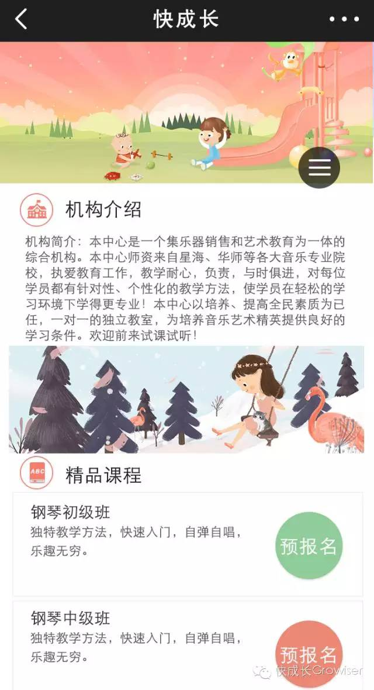
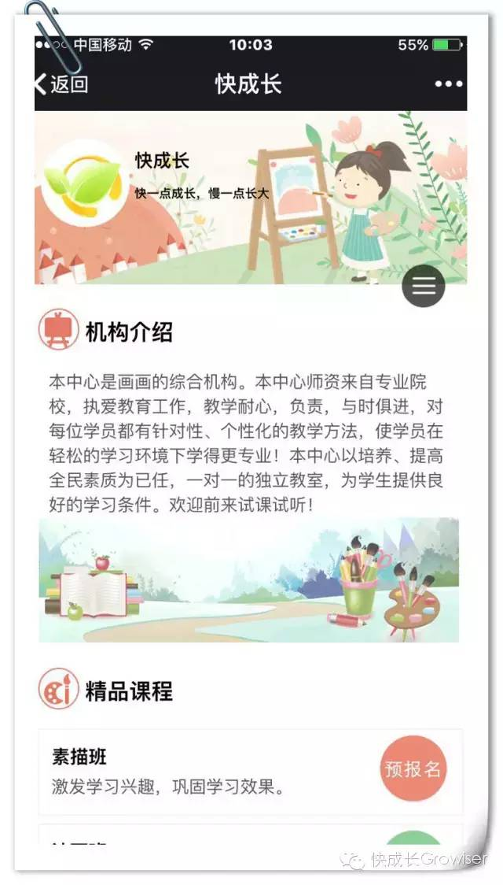
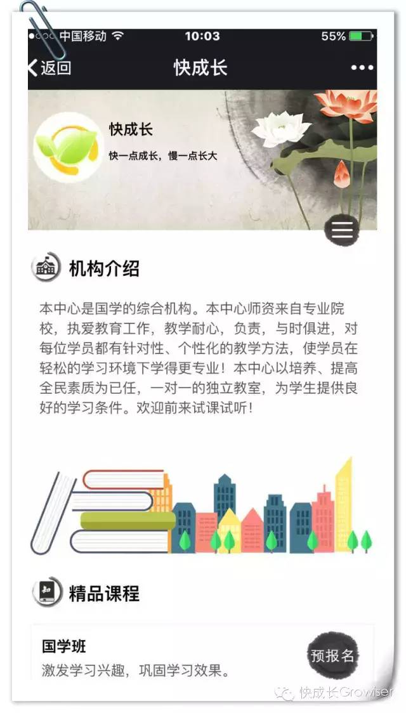
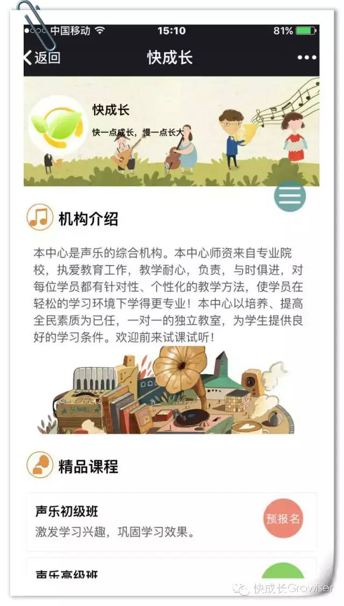
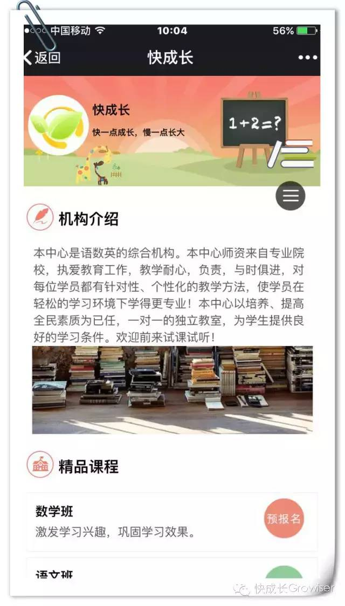

咱们机构有微官网了吗？
在互联网时代，是否拥有微官网已经成为体现机构水平的标准了。小编在之前推送过的文章《您发的传单正躺在垃圾桶里痛哭》已经跟大家分析过，机构宣传已经不能单纯依靠传统方式的事实。现如今在社会化媒体环境下，发招生传单的覆盖率、转化率已经很低了，成本高、耗时耗力、容易引起反感排斥就更不用多说了，还不持久、不环保……
很多机构已经意识到了这问题，并且学会利用起微信公众号平台来为自己做宣传了。那么既然运用起了微信平台，怎么能没有微官网呢！
微官网就如同机构在线上的门面、招牌，通过专属的微官网可以让学生、家长更好的了解和认识机构理念、机构风采。同时将提高机构的网络知名度、美誉度，树立品牌形象。
可是不会制作微官网怎么办？——不怕，快成长来帮您！
右图就是我们为机构打造的微官网模板您的机构介绍精品课程、教师风采、学校地址、联系方式、都会这得到最好的展示，这段时间里，我们为多家机构打造了专属微官网并取得了非常好的宣传效果，我们还有更多精彩模板等您来使用哦！
    您的官网可以清新可爱,可以古色古香,也可以优雅别致,无论您是舞蹈机构还是音乐培训中心,无论您想要什么样的风格,快成长都可以满足你
再次引用那段数据：如果一个拥有200名学生的培训机构在微信平台拥有自己的专属微官网，假设每个微信朋友圈有30人次的曝光度，那么200名学生家长同时在朋友圈转发机构的微官网，就将会有：200*30=6000人次的曝光。要是每个朋友圈的曝光度是50人次呢？100人次呢？那么曝光量将会更加惊人，发传单跟这比起来简直弱爆了！您还会满大街发传单吗?
一流的机构都拥有自己的微官网啦~
快成长倾力为您打造独一无二的专属微官网
更新颖、更特别
永久保存 无限传播
还犹豫什么呢？